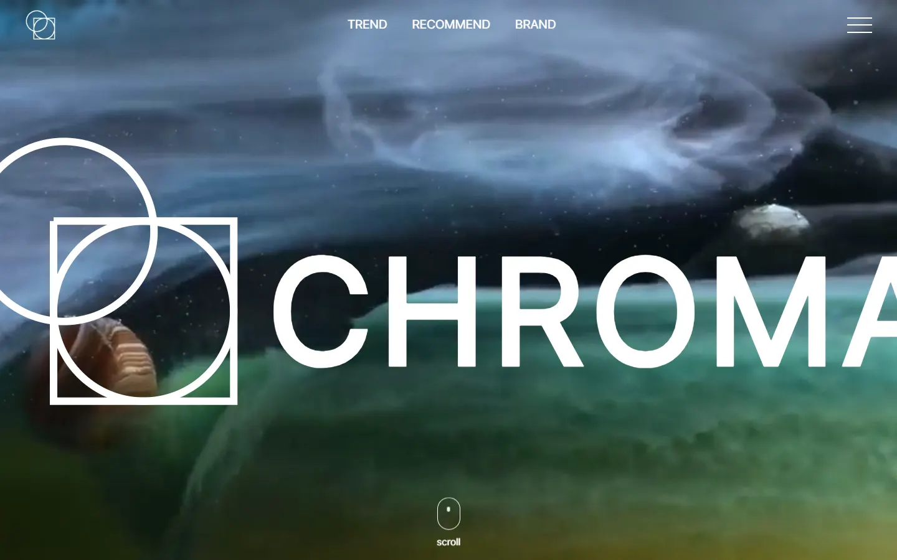

CHROMA
COLOR TREND WEB — MULTI-PAGE — 2023.10

01OVERVIEW
색이 만들어 내는 인상을 표 대신 영상과 스크롤 전환으로 보여 주는 4페이지 컬러 트렌드 웹입니다.
thisyear에서는 벤자민무어·팬톤·셔윈 윌리엄스의 2024 트렌드 컬러를 브랜드별로 걸러 보고 클릭해 색상값을 복사합니다. recommend는 드래그로 이미지를 탐색하고 색상 코드나 분위기를 골라 배색을 확인하며, brand는 트렌드 컬러를 쓴 브랜드를 소개합니다.
02TROUBLESHOOTING
-
PROBLEM
스크롤 연출이 끊겨서 나타났다
4개 페이지에 각각 다른 스크롤 연출을 붙였는데, 요소가 중간 단계 없이 튀어나오듯 등장했습니다.
-
CAUSE
보간을 직접 계산하고 있었다
스크롤 이벤트에서 위치 값을 읽어 애니메이션을 제어했고, 중간값 계산을 브라우저나 라이브러리에 맡기지 않았습니다.
-
ATTEMPT
타이밍을 수작업으로 맞췄다
지연 함수와 휠 입력으로 전체 화면 스크롤까지 직접 구현했지만, 보정 코드가 늘어나 수정하기 어려워졌습니다.
-
SOLUTION
보간은 TweenMax에 맡겼다
이징과 시간 계산을 라이브러리에 넘기고 연출 순서를 설계하는 데 집중했습니다. 어디까지 직접 계산할지 정하는 것도 구현의 일부라는 점을 배웠습니다.
03REBUILD 2.0
- 용량16.9MB2MB 이하
- 반응형대응 없음가변 단위 + 분기점 2개
- 접근성고려 안 함prefers-reduced-motion · alt 전수
- 애니메이션수작업 보간GSAP 타임라인 재설계
- 문서 언어en · ko · 빈 값 혼재lang="ko" 통일
- 저장소jQuery 2개 버전 · test 파일사용 파일만 · README
오른쪽은 2026.12 목표이며 아직 달성 전입니다. 문서 언어·저장소 항목은 2026.09.17 배포본과 저장소를 직접 확인했습니다.